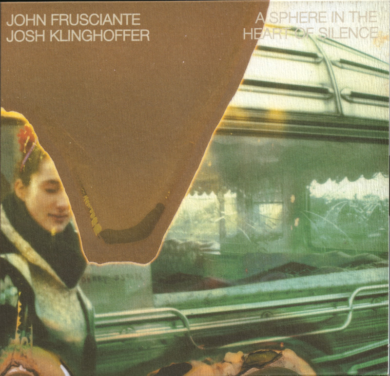
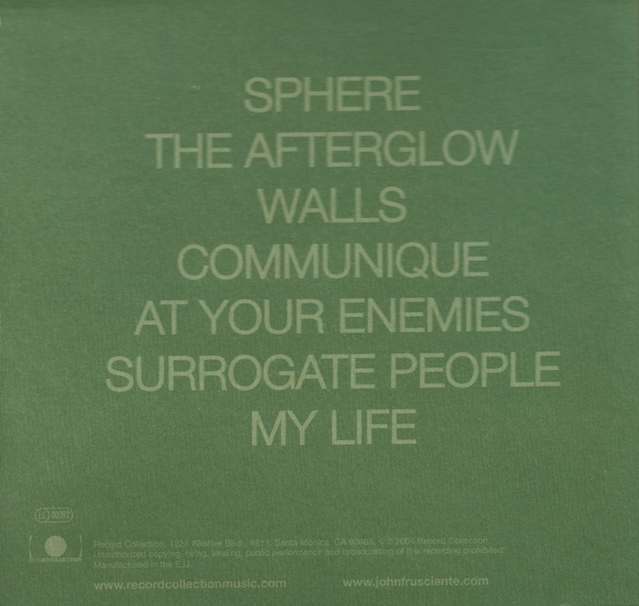

Wszystkim zorientowanym w dyskografii Johna Frusciante doskonale znany jest album „A Sphere in the Heart of Silence” nagrany wspólnie z Joshem Klinghofferem. Płyta została wydana nakładem Record Collection 23 listopada 2004 roku, dlatego dzisiejszy dzień poświęcimy na prezentację utworów z tego albumu dla tych słuchaczy, którzy (o ile to możliwe) jeszcze ich nie znają, chociaż dla wiernych fanów Johna są one od dawna dobrze znane. „A Sphere in the Heart of Silence” to płyta nagrana w cyklu „6 płyt w 6 miesięcy”. Już w 2004 roku, w chwili wydania albumu, została nazwana eksperymentem muzycznym – głównie z powodu ilości efektów elektronicznych zastosowanych przez znanego powszechnie ze swoich gitarowych popisów Johna Frusciante. W zestawieniu z wcześniejszymi płytami z „szóstki” i z wydaną jako ostatnia „Curtains” może wydawać się dziwny i nieprzyjazny. Zwolennicy gitarowo-piosenkowych kompozycji Frusciante podeszli z dużą rezerwą do „Sphere” i chyba trochę ją zlekceważyli. Dzisiaj wszyscy znają już eksperymentalne zamiłowania tego artysty. Wiemy, że potem pojawiły się takie płyty jak „PBX” , Letur Lefr” czy „Outsides” . Więc może warto wrócić do „Sphere” jako do zapowiedzi poważnego zwrotu w twórczości Johna Frusciante.
Moja przyjaźń z Joshem jest czymś, co sprawia, że jestem bardzo szczęśliwy. Doświadczyliśmy tyle bliskości poprzez wspólne słuchanie muzyki, a także tworzenie muzyki razem. Jest ona jedną z głównych rzeczy, która nadała sens mojemu życiu.
„A Sphere in the Heart of Silence” bardzo różni się od wcześniejszych albumów Johna. Po pierwsze w kompozycjach dominują głównie dźwięki elektroniczne, uzupełniane genialną gitarą i wokalem dwóch twórców albumu. Po drugie album jest sygnowany John Frusciante i Josh Klinghoffer, co w pełni uzasadnione jest wkładem pracy obu muzyków. Wielu krytyków twierdzi nawet, że jest to bardziej „joshowe” niż „johnowe” dzieło, że to Josh głównie odpowiada za transowe rytmy i tajemniczą aurę, nieobecną na pozostałych płytach „szóstki”. Fascynujące jest też to, że jest to owoc wyjątkowego muzycznego porozumienia, dokonującego się bez zbędnych słów. John już przy okazji „Shadows Collide With People” z zachwytem przytaczał historię utworu „Omission”, do którego on i Josh niezależnie od siebie napisali idealnie pasujące muzyczne partie. „On wie, skąd bierze się moja muzyka.” – mówił w jednym z wywiadów o młodszym przyjacielu. Tę telepatyczną muzyczną więź słychać też na „Sphere”. Mimo nieco posępnego klimatu całości można odnieść wrażenie, że John i Josh świetnie się bawili nagrywając ten album, albo raczej wybierając na niego powstałe przy różnych okazjach efekty swoich zabaw dziwnymi dźwiękami, głosem, wymiany instrumentami i rolami podczas nagrań. Zresztą niezwykłe popisy wokalne obu panów są jednym z elementów decydujących o specyficznym klimacie tej płyty – obaj przyznawali się w późniejszych wywiadach do inspiracji śpiewem Bjork. Zwłaszcza głos Josh’a dodał prawdziwej magii utworom, przy których to on stawał za mikrofonem. Jego chórki w Walls to bodaj najwspanialszy moment tego utworu, natomiast śpiew w At Your Enemies jest po prostu niepowtarzalny.
Niektóre piosenki na ten album napisane zostały w czasie nagrywania „Shadows Collide With People”, jednakże np. utwór „Sphere” powstał podczas jednego z cyklu słynnych koncertów Performance w 2004 roku. Tym nastrojowym, melodyjnym i tajemniczym utworem Frusciante i Klinghoffer wprowadzają nas w album pełen elektronicznych i eksperymentalnych dźwięków. ‘Sphere’ jest też najdłuższym utworem na płycie (8:28) – w pierwotnej wersji wykonywanej na żywo w roku 2003 trwało prawie pół godziny.
Drugi utwór „The Afterglow” pochodzi z czasów pisania piosenek na „Shadows Collide With People” i był pierwotnie przewidziany na tamtą płytę, ale John i Josh zdecydowali się przeznaczyć utwór na ten wspólny, bardziej eksperymentalny album. Z klimatem „Shadows” łączy go melodyjność. Jednak na słuchacza, rozmarzonego początkowym kunsztownym „dialogiem” nieprzetworzonego i przetworzonego głosu Frusciante oraz dźwięcznym, wysokim śpiewem muzyka, w ostatniej zwrotce czeka zaskoczenie w postaci niemal rozpaczliwego krzyku.
Przypadkowo zaprogramowany automat perkusyjny dał z kolei początek utworu „Walls”, następnie John Frusciante dodał do tego swój wokal, a na koniec Josh Klinghoffer dorzucił bębny. Wielowarstwowe nagromadzenie efektów, kojarzących się z jakimiś bliżej nieokreślonymi mechanicznymi hałasami, podbija zaprezentowany w swojej maksymalnej skali możliwości wokal Frusciante. Śpiewając płynnie przechodzi od falsetu do krzyku – intensywnego, ale w pełni kontrolowanego. W budowaniu niepokojącego klimatu udział ma też tekst: „Jest tylko śmierć i tak jak wcześniej mówiłem to życie jest granicą bólu.”
Kolejnym utworem płyty jest „Communique”, który został nagrany za pierwszym podejściem, bez żadnych późniejszych poprawek. Wykonywany był podczas Performance 2 w Knitting Factory w Hollywood. Josh śpiewa tu swoim fascynującym, depresyjnym, zaskakująco zbliżonym do kobiecego głosem i gra na fortepianie, natomiast John dołożył syntezatorowy efekt wiatru, który nadaje całości interesujący klimat.
„At Your Enemies” oraz „Surrogate People” to piosenki powstałe podczas prac nad płytą „Shadows Collide With People”. Zostały one napisane przez Josha, za wyjątkiem wokalu w utworze „Surrogate People”. Zdania krytyków są podzielone – jedni uważają je za najciekawszy, inni – za najsłabszy punkt płyty. W „At Your Enemies” słychać echa poprzedniego utworu – głos Josha jest jeszcze bardziej „omdlewający” i teatralnie przeciągły – brzmi czasem jak głos wokalisty Muse, Matthew Bellamy`ego. W „Surrogate People” ciekawy jest kontrast między akustyczną gitarą, a jednostajnym syntezatorowym tłem, który wzbogacają pozostałe instrumenty oraz partie wokalne obu artystów.
Ostatnim utworem jest „My Life”, który również został nagrany w czasie rzeczywistym, a wykonuje go sam Frusciante. Ten utwór wyraźnie odstaje od całości – solowe dzieło Johna ma w porównaniu ze swoimi poprzednikami bardzo oszczędną aranżację. Muzyk śpiewając akompaniuje sobie na pianinie – całość trwa iście punkowe półtorej minuty i jest to najkrótszy utwór na płycie.
Niełatwo jest przekonać się do tego albumu za pierwszym razem, ale za każdym kolejnym przesłuchaniem odkrywamy w nim coś nowego, coś, co sprawia, że coraz lepiej się go słucha i wraca do niego z niekłamaną przyjemnością. Niewątpliwie do jego głębokiego odbioru potrzebny jest również odpowiedni nastrój, który pozwoli nam na uchwycenie i zinterpretowanie bijących z każdego utworu emocji.
Na koniec obejrzyjcie jeszcze jedno w wykonań live
Okładka:

Tył:

Label: Record Collection Catalog#: 48949-1 Format: Vinyl, LP, CD Country: US Released: 2004 Genre: Rock Style: Alternative Rock
Credits: Artwork By – John Frusciante , Mike Piscitelli Engineer, Mixed By – Ryan Hewitt Mastered By – Bernie Grundman Producer – Josh Klinghoffer Producer, Piano, Vocals, Drum Programming, Guitar, Written-By – John Frusciante Notes: Recorded at Mad Dog Studios April 9-11, 2004 and at Cello Studios April 14-15, 2004. Mixed at Cello Studios, Hollywood, CA.
Tracklisting: A1 Sphere (8:29) Drum Programming, Featuring [White Noise], Guitar [First Solo] – John Frusciante String [Arp Ensemble], Guitar [2nd Solo] – Josh Klinghoffer
A2 The Afterglow (5:19) Vocals, Vocals [Treatments] – John Frusciante, Guitar, Bass, Synthesizer, Drum Programming [Loop] – Josh Klinghoffer
A3 Walls (6:19) Drum Pogramming, Lead Vocals, Strings [Synthetic], Drums [Treatments], Vocals [treatments] – John Frusciante Drums, Synthesizer [One Note], Backing Vocals – Josh Klinghoffer
B1 Communique (6:55) Piano, Vocals – Josh Klinghoffer
B2 At Your Enemies (4:23) Drum Programming, Synthesizer, Guitar – John Frusciante Synthesizer, Vocals, Bass – Josh Klinghoffer
B3 Surrogate People (5:19) Guitar [Acoustic, Lead], Vocals – John Frusciante Vocals, Bass, Drums, Synthesizer, Guitar [Lead] – Josh Klinghoffer
B4 My Life (1:35) Vocals, Piano – John Frusciante